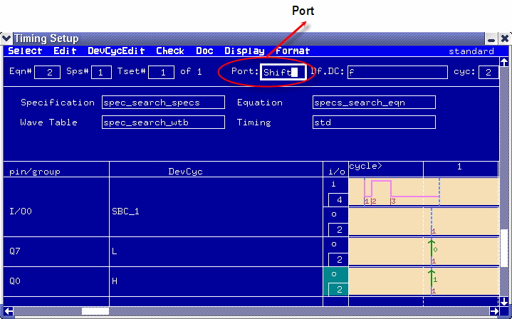

Verifying a multiport timing setup
Open the Timing Setup Tool to verify the timings of the ports included in the port sequence.

The Timing Setup Tool comprises some multiport specific extensions which slightly change the way (compared to a single-port setup) you compose the sets required for a complete timing.
- Click the menu .
- Select a specification: click the menu The Select Specification window is displayed. In this window
you select a specification.
The specification name is displayed in the Specification field.
Selecting a specification determines an equation set and a wavetable per port. The first port of the port sequence is displayed in the Port field. The Equation field and the Wavetable field display the equation set and the wavetable associated with the first port.
- To display the timing for a different port, click the menu The Select Port Name window is displayed. Select the port for which you want to display the timing. The Equation field and the Wavetable field now display the equation set and the wavetable of the selected port.
- The selected equation set defines one or more timing sets. By default, the first timing set is used and displayed in the fields Tset# (timings set number) and Timing (timing set name). To activate another timing set change the timing set number in the Tset# field.
- As in a single-port setup you specify a device cycle in the DevCyc column and define display formats in the Format menu. The Timing Setup Editor then displays the corresponding waveforms.
Note If some pins are included in a port of the current (multi-port burst) start
label, but not in any port of the primary multi-port multiport timing specification, this
mismatch may lead to internal problems. However, you will in this case be warned of any problems
in the UI report window. Possibly, you may have to reset your system, for
example, by changing the device. For details see also Incomplete multiport
setups.